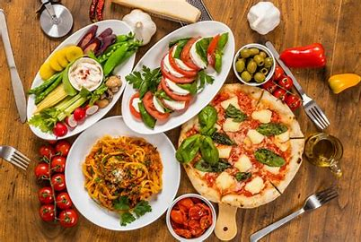

Cuisine
Cuisine is more than just food—it reflects the culture, history, and traditions of a place. Each cuisine carries unique flavors, cooking methods, and ingredients that tell stories about the people who prepare and enjoy them. For example, spices in Indian cuisine show the region’s love for bold, layered tastes, while Japanese cuisine highlights simplicity and freshness. Beyond nourishment, cuisine often brings people together, whether through family meals, festivals, or street food shared with friends. In this way, it connects
INDIAN CUISINE
Indian cuisine is famous for its rich flavors, spices, and variety. Each region has special dishes—like biryani and naan in the north, or dosa and idli in the south. It is not just food but also a part of tradition and togetherness.

ITALIAN CUISNE
Italian cuisine is known for its simplicity, fresh ingredients, and delicious flavors. Popular dishes include pasta, pizza, and risotto, often made with herbs, olive oil, and cheese. It focuses on quality and tradition, making it loved all around the world.
JAPANESE CUISINE
Japanese cuisine is famous for its freshness, balance, and presentation. Popular dishes include sushi, ramen, and tempura, often made with rice, seafood, and seasonal vegetables. It values simplicity and harmony, making it both healthy and delicious.

Popular Foods Across the world
italian
- pizza
- pasta
- risotto
japanese
- ramen
- sushi
- tokatsu
indian
- Chicken Biryani
- Butter Chicken
- Naan Bread